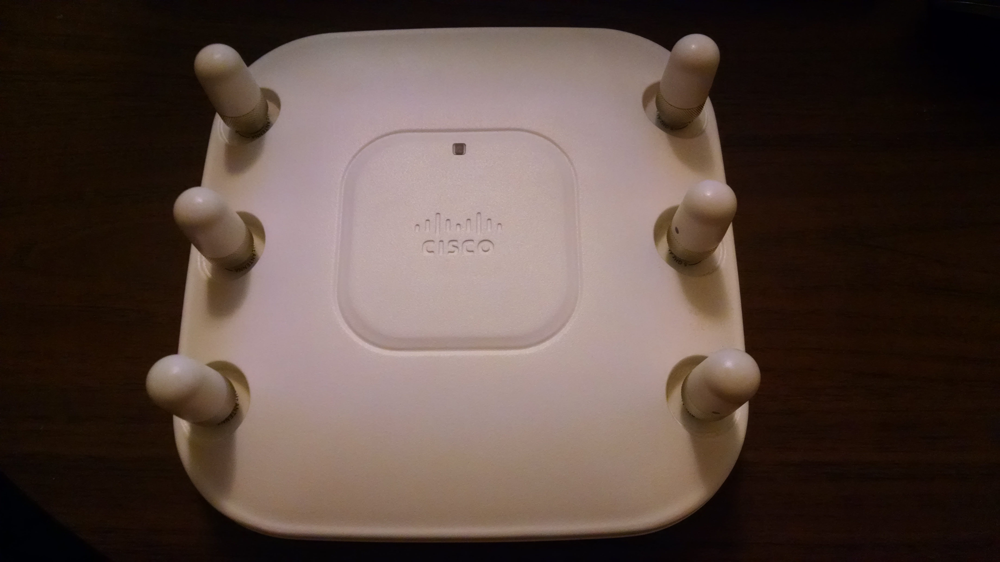
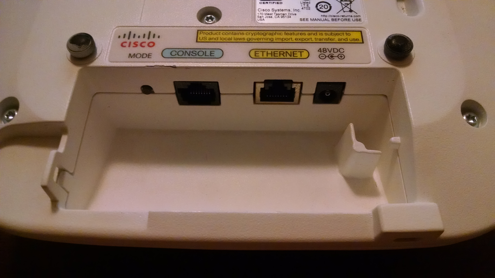
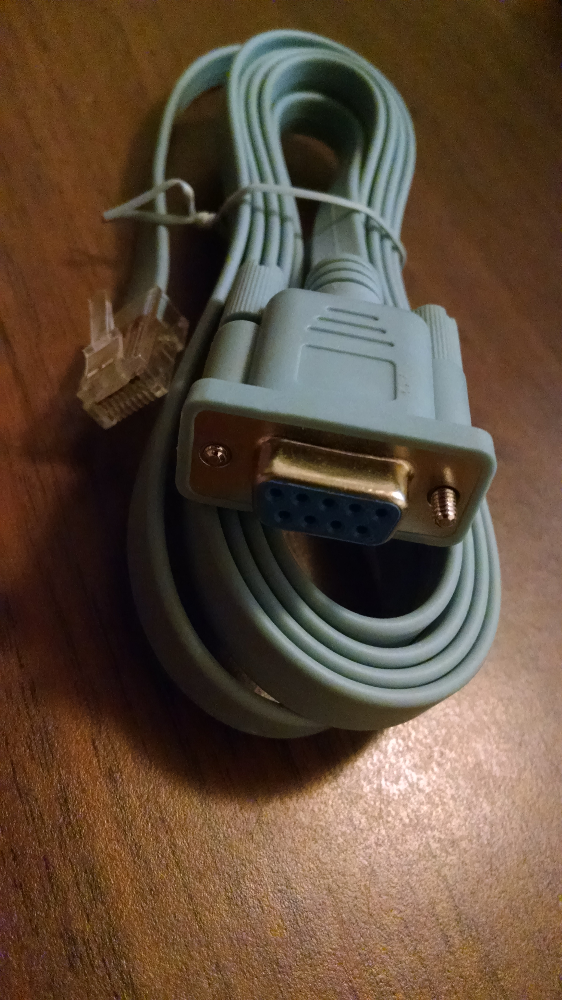
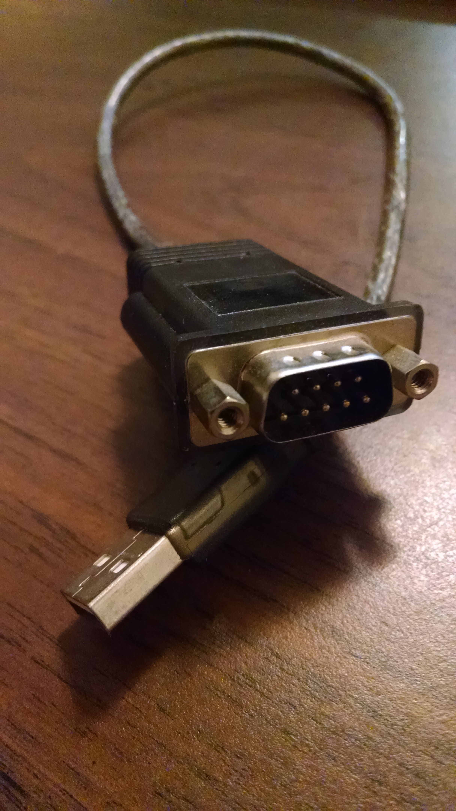
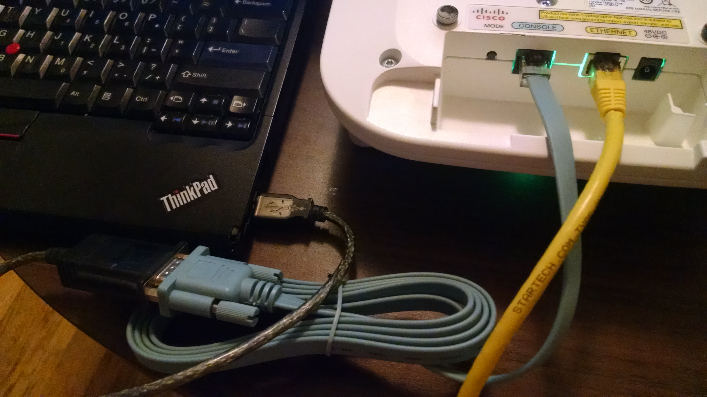
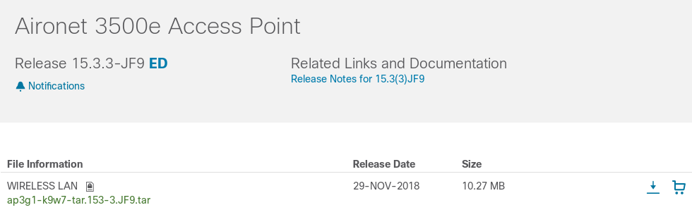
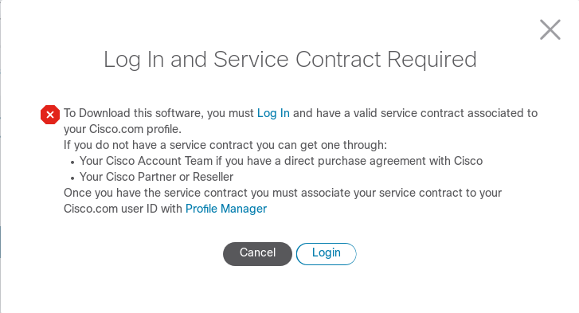
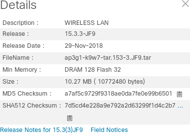
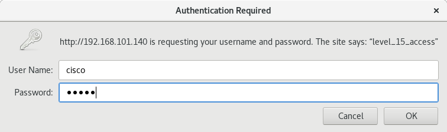

A guide to fighting with a Cisco access point
How eight hours with Cisco Aironet gear made me angry for life
In my hands is a Cisco AIR-CAP-3502-E-A-K9 that I saved from the landfill. After about eight hours of suffering, and what was surely a cancer causing dose of RF-radiation, I now know:
-
How to convince this access point to provide me with wifi.
-
Why Cisco products are probably best left in the garbage.
What follows is my setup guide and review for using a Cisco Aironet device. This guide will likely be useful with other models of Cisco devices, but use your own best judgment.
Warning: this article contains some rants which I hope Cisco will take as constructive criticism to help turn their tanker ship of a company around before it sinks to the bottom of the ocean where it currently belongs.
Hardware:
This is the Cisco device in my possession:
|  |
| The front of the AP has a beautiful LED that can change colours and flash. |
{kind=link}
It is heavy, and made of metal. It feels like quality. It supports dual band 802.11n, and probably has a feature to cook a grilled cheese sandwhich between the six antennas. My friends in the radiology department refuse to go anywhere near it ;)
On the back it has an ethernet port which can run the thing with PoE, and it has the dreaded Cisco console port. Please note the cryptographic export warning label, as restricted countries should take note: I’m certain this device was built as a ruse to annoy the user, so you’re better off to avoid this one.
|  |
| Beware the dreaded cisco console port. |
{kind=link}
You’ll almost certainly need the proprietary Cisco cable and a serial to USB adapter. Cisco includes a cable with every device, and so any business or university that mistakenly bought Cisco probably has thrown out hundreds of these. Ask them nicely and they’ll probably give you one for free. (That’s how I got mine.)
|  |
| The cables look like this, and they're always this colour. |
{kind=link}
Plug this into a serial to USB adapter and you’re in business!
|  |
| Every hacker should probably own one of these devices. You can borrow mine if you're a hacker-in-training. |
{kind=link}
Serial devices:
I’ve always had bad luck with serial port connections. On Linux you’re basically
supposed to use minicom or screen, and I’ve never once been able to read and
write to a serial port with either! I also tried tio with no success, and
eventually found a new player by the name of picocom which worked perfectly!
It installed effortlessly from the identically-named Fedora package.
$ dmesg --follow
[...]
[361353.860046] usb 2-1.2: new full-speed USB device number 5 using ehci-pci
[361353.938981] usb 2-1.2: New USB device found, idVendor=067b, idProduct=2303, bcdDevice= 0.01
[361353.938990] usb 2-1.2: New USB device strings: Mfr=0, Product=0, SerialNumber=0
[361353.940867] pl2303 2-1.2:1.0: pl2303 converter detected
[361353.942955] usb 2-1.2: pl2303 converter now attached to ttyUSB0
Plug everything in, and once dmesg tells you what port it’s on, connect away:
$ sudo picocom /dev/ttyUSB0
[sudo] password for james:
picocom v3.1
port is : /dev/ttyUSB0
flowcontrol : none
baudrate is : 9600
parity is : none
databits are : 8
stopbits are : 1
escape is : C-a
local echo is : no
noinit is : no
noreset is : no
hangup is : no
nolock is : no
send_cmd is : sz -vv
receive_cmd is : rz -vv -E
imap is :
omap is :
emap is : crcrlf,delbs,
logfile is : none
initstring : none
exit_after is : not set
exit is : no
Type [C-a] [C-h] to see available commands
Terminal ready
Now our serial console is ready and waiting, and it should work automatically for the rest of this blog post.
|  |
| Here's what everything looks like all plugged together. |
{kind=link}
I powered the AP over ethernet, but you can use a power supply if you don’t have a PoE compatible switch, midspan, or injector.
Firmware:
Cisco has different “modes” that its access point can operate in. There are at least two: “lightweight” and “autonomous”. Lightweight mode requires additional Cisco hardware, and doesn’t let you operate the access point without their proprietary controllers. Autonomous mode is a standalone mode that lets you operate a single AP without requiring centralized coordination.
Unfortunately, to switch between the modes you need to flash the device with different firmware. I’m also convinced that there’s some third kind of secret “enterprise” mode that locks you in even deeper, but I don’t know anything for sure. My access point was not in autonomous mode when I got it. It was easy to tell, because once it was plugged in, it got an IP address over DHCP, but would not respond on HTTP port 80. In general, in autonomous mode, there’s a listening web server running from the AP.
Want to flash it?
Assuming you need to flash your device, you’ll need to get a firmware image. It looks like they’re available to download from Cisco’s site:
|  |
| Just one click away, right? |
{kind=link}
But then you get hit with a paywall of doom…
|  |
| Pay wall of doom. |
{kind=link}
Which ultimately ends in failure or an empty bank account. They even require your full home address for many of the free downloads! Crazy. Luckily, they at least provide some information about the images:
|  |
| Thanks Cisco! This is useful in case you find a firmware image of unknown origin. |
{kind=link}
Luckily for me, there happened to be a file with the exact name and hash of a slightly older version of their software taped to a USB key on the access point, so I was able to use that. If you’ve misplaced your copy, I heard that searching for the exact file name of an older N-1 or N-M version of the software can lead to some archival sites which have copies, however I wouldn’t know much about those, and you should check your local laws before downloading from such a site.
As an aside, the files are named quite strangely. This article talks about the difference.
The “lightweight” versions have a w8 in their names, and the “standalone”
versions contain a w7. The latter is what we want. I went with:
“ap3g1-k9w7-tar.153-3.JF5.tar”. Yes it’s strange that they have an embedded
-tar in the filename.
TFTP server:
To host the image to flash, you’ll need to run a TFTP server. This shouldn’t be
complicated, but software sucks. I found a plausibly simple way to do this.
Since the TFTP protocol is very simple, there are many short python and
golang implementations. Pick your favourite. Since I hack on mgmt
in golang, I chose golang. I found a small package
that I could audit in five minutes. Install it:
$ git clone --recursive https://github.com/whyrusleeping/go-tftp
Cloning into 'go-tftp'...
remote: Enumerating objects: 141, done.
remote: Total 141 (delta 0), reused 0 (delta 0), pack-reused 141
Receiving objects: 100% (141/141), 25.71 KiB | 1.12 MiB/s, done.
Resolving deltas: 100% (62/62), done.
$ cd go-tftp/
$ git show | head -1
commit 3695fa5761ee60eace335212461d6007cf2be923
$ go build
$ mv go-tftp ../tftp-server
$ cd ../
Now copy the ap3g1-k9w7-tar.153-3.JF5.tar file into this directory, and then
run:
$ ls
ap3g1-k9w7-tar.153-3.JF5.tar go-tftp/ tftp-server*
$ sudo ./tftp-server -port 69
[sudo] password for james: hunter2
The TFTP server is now ready and waiting for our request. You’ll need to make sure that you allow incoming requests on UDP port 69 for this to work.
Rooting:
If your device is already on, hold down the “mode” button and reset it by disconnecting the power. Keep holding the “mode” button while you reconnect it. Your serial console might look something similar to this:
r WRDTR,CLKTR: 0x8200083f 0x40000000
r RQDC ,RFDC : 0x80000031 0x00000216
using eeprom values
WRDTR,CLKTR: 0x8200083f 0x40000000
RQDC ,RFDC : 0x80000031 0x00000216
using MCNG ddr static values from serial eeprom
ddr init done
IOS Bootloader - Starting system.
FLASH CHIP: Numonyx P33
Checking for Over Erased blocks
......................................................................................................................................................................................................................................................
Xmodem file system is available.
DDR values used from system serial eeprom.
WRDTR,CLKTR: 0x8200083f, 0x40000000
RQDC, RFDC : 0x80000031, 0x00000216
PCIE0: link is up.
PCIE0: VC0 is active
PCIE1: link is up.
PCIE1: VC0 is active
64bit PCIE devices
PCIEx: initialization done
flashfs[0]: 78 files, 15 directories
flashfs[0]: 0 orphaned files, 0 orphaned directories
flashfs[0]: Total bytes: 31739904
flashfs[0]: Bytes used: 24312832
flashfs[0]: Bytes available: 7427072
flashfs[0]: flashfs fsck took 17 seconds.
Reading cookie from system serial eeprom...Done
Base Ethernet MAC address: 44:d3:ca:b0:91:82
Ethernet speed is 1000 Mb - FULL duplex
Initially the access point LED is blue, until it eventually it turns red and the following message is printed on the console:
button is pressed, wait for button to be released...
At this point, release the button, and the text will continue scrolling:
button pressed for 27 seconds
process_config_recovery: set IP address and config to default 10.0.0.1
process_config_recovery: image recovery
image_recovery: Download default IOS tar image tftp://255.255.255.255/ap3g1-k9w7-tar.default
examining image...
%Error opening tftp://255.255.255.255/ap3g1-k9w7-tar.default (connection timed out)
ap:
It then seems to try and boot from a default TFTP server, which fails because
there isn’t one running there. I then ran: dir flash (Note the trailing
colon.) The ap: text is the prompt’s $PS1.
ap: dir flash:
Directory of flash:/
2 -rwx 95008 <date> lwapp_reap.cfg
3 -rwx 280 <date> lwapp_officeextend.cfg
4 -rwx 64 <date> sensord_CSPRNG1
5 -rwx 58074 <date> event.log
6 drwx 128 <date> configs
7 -rwx 37852 <date> event.capwap
40 -rwx 64 <date> sensord_CSPRNG0
8 -rwx 35352 <date> lwapp_non_apspecific_reap.cfg
44 -rwx 234 <date> env_vars
11 drwx 128 <date> ap3g1-rcvk9w8-mx
43 -rwx 3564 <date> private-config
14 -rwx 8216 <date> private-multiple-fs
76 drwx 832 <date> ap3g1-k9w8-mx.152-2.JA
10 -rwx 965 <date> lwapp_mm_mwar_hash.cfg
15 drwx 1152 <date> ap3g1-k9w8-mx.152-4.JB3
7427072 bytes available (24312832 bytes used)
Let’s get root on this device:
ap: rename flash:private-multiple-fs flash:private-multiple-fs-old
ap: rename flash:env_vars flash:env_vars-old
I learned that from this blog post. Now reset the device:
ap: reset
Are you sure you want to reset the system (y/n)?y
System resetting...
Then the system boots normally…
You might notice a line like this in the terminal:
Cisco IOS Software, C3500 Software (AP3G1-RCVK9W8-M), Version 12.4(23c)JA2, RELEASE SOFTWARE (fc3)
followed a little while later by:
Press RETURN to get started!
Quite annoyingly, Cisco’s software likes to constantly flood your console with random log messages. These interrupt your workflow, and it’s obvious their engineers didn’t think about good design. You can get rid of most (but not all) of them shortly…
Pressing RETURN gets you a console. At this point you can type: enable at
the prompt, which will ask you for a Password: . Type Cisco (capitalized)
and you’ll now see a $PS1 that ends with a #. We’ve got root! You’ll then
need to type the magic commands: debug capwap console cli and then:
debug capwap client no-reload. We can also get rid of most of the logging
with: conf t, then no logging console, then end. This all looks like:
APxyz>enable
Password:
APxyz#
APxyz#debug capwap console cli
This command is meant only for debugging/troubleshooting
Any configuration change may result in different
behavior from centralized configuration.
CAPWAP console CLI allow/disallow debugging is on
APxyz#debug capwap client no-reload
CAPWAP ignore internal reload debugging is on
APxyz#conf t
Enter configuration commands, one per line. End with CNTL/Z.
APxyz(config)#no logging console
APxyz(config)#end
(Note: APxyz is the existing name of the AP. Yours may appear differently.)
Erasing:
On my first attempt flashing the firmware it failed with:
ERROR: Not enough free space in "flash:/"
ERROR: Clean up and try again.
So let’s erase everything to make some room!
APxyz#erase flash:
Erasing the flash filesystem will remove all files! Continue? [confirm]
You have to press ENTER to confirm, and then be patient for at least five minutes. You’ll still get spurious log messages, but eventually your AP will finish erasing and hopefully report completion:
flashfs[1]: 0 files, 1 directories
flashfs[1]: 0 orphaned files, 0 orphaned directories
flashfs[1]: Total bytes: 31481856
flashfs[1]: Bytes used: 1024
flashfs[1]: Bytes available: 31480832
flashfs[1]: flashfs fsck took 7 seconds.
Erase of flash: complete
APxyz#
Maybe the fsck took seven seconds, but this sure is a misleading message.
At this point it’s time to run the flashing operation!
Flashing:
Luckily, I have a DHCP server running in my environment, so the AP automatically gets an IP address. If you don’t have one, you can run:
APxyz#capwap ap ip address 192.168.101.99 255.255.255.0
APxyz#capwap ap ip default-gateway 192.168.101.1
Or similar, depending on what your network looks like. My laptop running the
TFTP server is at 192.168.101.42, so I ran:
archive download-sw /force /overwrite tftp://192.168.101.42/ap3g1-k9w7-tar.153-3.JF5.tar
Which takes a few minutes and looks like:
APxyz#archive download-sw /force /overwrite tftp://192.168.101.42/ap3g1-k9w7-tar.153-3.JF5.tar
examining image...
Loading ap3g1-k9w7-tar.153-3.JF5.tar from 192.168.101.42 (via GigabitEthernet0): !
extracting info (281 bytes)
Image info:
Version Suffix: k9w7-.153-3.JF5
Image Name: ap3g1-k9w7-mx.153-3.JF5
Version Directory: ap3g1-k9w7-mx.153-3.JF5
Ios Image Size: 8735232
Total Image Size: 10732032
Image Feature: WIRELESS LAN
Image Family: AP3G1
Wireless Switch Management Version: 8.5.120.0
Extracting files...
ap3g1-k9w7-mx.153-3.JF5/ (directory) 0 (bytes)
extracting ap3g1-k9w7-mx.153-3.JF5/ap3g1-k9w7-mx.153-3.JF5 (128690 bytes).!
extracting ap3g1-k9w7-mx.153-3.JF5/ap3g1-boot-m_upg (393216 bytes)!
extracting ap3g1-k9w7-mx.153-3.JF5/u-boot.bin (393216 bytes)!!
ap3g1-k9w7-mx.153-3.JF5/html/ (directory) 0 (bytes)
ap3g1-k9w7-mx.153-3.JF5/html/level/ (directory) 0 (bytes)
ap3g1-k9w7-mx.153-3.JF5/html/level/1/ (directory) 0 (bytes)
extracting ap3g1-k9w7-mx.153-3.JF5/html/level/1/appsui.js (563 bytes)
extracting ap3g1-k9w7-mx.153-3.JF5/html/level/1/back.shtml (512 bytes)
extracting ap3g1-k9w7-mx.153-3.JF5/html/level/1/cookies.js (5032 bytes)
extracting ap3g1-k9w7-mx.153-3.JF5/html/level/1/forms.js (20442 bytes)
extracting ap3g1-k9w7-mx.153-3.JF5/html/level/1/sitewide.js (17290 bytes)
extracting ap3g1-k9w7-mx.153-3.JF5/html/level/1/stylesheet.css (3220 bytes)
extracting ap3g1-k9w7-mx.153-3.JF5/html/level/1/config.js (29225 bytes)
extracting ap3g1-k9w7-mx.153-3.JF5/html/level/1/popup_capabilitycodes.shtml.gz (1020 bytes)
extracting ap3g1-k9w7-mx.153-3.JF5/html/level/1/filter.js.gz (2037 bytes)
extracting ap3g1-k9w7-mx.153-3.JF5/html/level/1/filter_vlan.js.gz (1459 bytes)
extracting ap3g1-k9w7-mx.153-3.JF5/html/level/1/filter_mac_ether.js.gz (1793 bytes)
extracting ap3g1-k9w7-mx.153-3.JF5/html/level/1/security.js.gz (962 bytes)
extracting ap3g1-k9w7-mx.153-3.JF5/html/level/1/vlan.js.gz (1196 bytes)
extracting ap3g1-k9w7-mx.153-3.JF5/html/level/1/ssid.js.gz (6149 bytes)
extracting ap3g1-k9w7-mx.153-3.JF5/html/level/1/network-if.js.gz (2098 bytes)
extracting ap3g1-k9w7-mx.153-3.JF5/html/level/1/dot1x.js.gz (988 bytes)
extracting ap3g1-k9w7-mx.153-3.JF5/html/level/1/stp.js.gz (957 bytes)
extracting ap3g1-k9w7-mx.153-3.JF5/html/level/1/ap_assoc.shtml.gz (5892 bytes)
extracting ap3g1-k9w7-mx.153-3.JF5/html/level/1/ap_event-log.shtml.gz (4158 bytes)
extracting ap3g1-k9w7-mx.153-3.JF5/html/level/1/ap_home.shtml.gz (7632 bytes)
extracting ap3g1-k9w7-mx.153-3.JF5/html/level/1/ap_network-if.shtml.gz (3576 bytes)
extracting ap3g1-k9w7-mx.153-3.JF5/html/level/1/ap_network-map.shtml.gz (4124 bytes)
extracting ap3g1-k9w7-mx.153-3.JF5/html/level/1/ap_services.shtml.gz (3937 bytes)
extracting ap3g1-k9w7-mx.153-3.JF5/html/level/1/ap_system-sw.shtml.gz (3134 bytes)
extracting ap3g1-k9w7-mx.153-3.JF5/html/level/1/ap_contextmgr.shtml.gz (4073 bytes)
ap3g1-k9w7-mx.153-3.JF5/html/level/1/images/ (directory) 0 (bytes)
extracting ap3g1-k9w7-mx.153-3.JF5/html/level/1/images/ap_title_appname.gif (2064 bytes)
extracting ap3g1-k9w7-mx.153-3.JF5/html/level/1/images/3500_title_appname.gif (1931 bytes)
extracting ap3g1-k9w7-mx.153-3.JF5/html/level/1/images/apps_button.gif (1211 bytes)
extracting ap3g1-k9w7-mx.153-3.JF5/html/level/1/images/apps_button_1st.gif (1171 bytes)
extracting ap3g1-k9w7-mx.153-3.JF5/html/level/1/images/apps_button_cbottom.gif (318 bytes)
extracting ap3g1-k9w7-mx.153-3.JF5/html/level/1/images/apps_button_current.gif (1206 bytes)
extracting ap3g1-k9w7-mx.153-3.JF5/html/level/1/images/apps_button_endcap.gif (878 bytes)
extracting ap3g1-k9w7-mx.153-3.JF5/html/level/1/images/apps_button_encap_last.gif (333 bytes)
extracting ap3g1-k9w7-mx.153-3.JF5/html/level/1/images/apps_button_last.gif (386 bytes)
extracting ap3g1-k9w7-mx.153-3.JF5/html/level/1/images/apps_button_nth.gif (1177 bytes)
extracting ap3g1-k9w7-mx.153-3.JF5/html/level/1/images/apps_leftnav_dkgreen.gif (869 bytes)
extracting ap3g1-k9w7-mx.153-3.JF5/html/level/1/images/apps_leftnav_green.gif (879 bytes)
extracting ap3g1-k9w7-mx.153-3.JF5/html/level/1/images/apps_leftnav_upright.gif (64 bytes)
extracting ap3g1-k9w7-mx.153-3.JF5/html/level/1/images/apps_leftnav_yellow.gif (881 bytes)
extracting ap3g1-k9w7-mx.153-3.JF5/html/level/1/images/arrowdown_red.gif (108 bytes)
extracting ap3g1-k9w7-mx.153-3.JF5/html/level/1/images/arrowup_green.gif (108 bytes)
extracting ap3g1-k9w7-mx.153-3.JF5/html/level/1/images/corner_ur_7.gif (53 bytes)
extracting ap3g1-k9w7-mx.153-3.JF5/html/level/1/images/dkgreenmask11_up.gif (113 bytes)
extracting ap3g1-k9w7-mx.153-3.JF5/html/level/1/images/dkgreenmask28_upright.gif (110 bytes)
extracting ap3g1-k9w7-mx.153-3.JF5/html/level/1/images/grn_vertlines_bottom.gif (149 bytes)
extracting ap3g1-k9w7-mx.153-3.JF5/html/level/1/images/grn_vertlines_top.gif (141 bytes)
extracting ap3g1-k9w7-mx.153-3.JF5/html/level/1/images/hinav_plus.gif (56 bytes)
extracting ap3g1-k9w7-mx.153-3.JF5/html/level/1/images/left_bkg.gif (146 bytes)
extracting ap3g1-k9w7-mx.153-3.JF5/html/level/1/images/list_data.gif (122 bytes)
extracting ap3g1-k9w7-mx.153-3.JF5/html/level/1/images/logo.gif (29454 bytes)
extracting ap3g1-k9w7-mx.153-3.JF5/html/level/1/images/pixel.gif (49 bytes)
extracting ap3g1-k9w7-mx.153-3.JF5/html/level/1/images/sitewide_downleft.gif (53 bytes)
extracting ap3g1-k9w7-mx.153-3.JF5/html/level/1/images/sitewide_help_off.gif (934 bytes)
extracting ap3g1-k9w7-mx.153-3.JF5/html/level/1/images/sitewide_help_on.gif (934 bytes)
extracting ap3g1-k9w7-mx.153-3.JF5/html/level/1/images/sitewide_print_off.gif (111 bytes)
extracting ap3g1-k9w7-mx.153-3.JF5/html/level/1/images/sitewide_print_on.gif (111 bytes)
extracting ap3g1-k9w7-mx.153-3.JF5/html/level/1/images/spacer.gif (49 bytes)
extracting ap3g1-k9w7-mx.153-3.JF5/html/level/1/images/whitemask11_botleft.gif (62 bytes)!
extracting ap3g1-k9w7-mx.153-3.JF5/html/level/1/images/whitemask11_upright.gif (61 bytes)
extracting ap3g1-k9w7-mx.153-3.JF5/html/level/1/images/event_alert.gif (73 bytes)
extracting ap3g1-k9w7-mx.153-3.JF5/html/level/1/images/event_critical.gif (73 bytes)
extracting ap3g1-k9w7-mx.153-3.JF5/html/level/1/images/event_debugging.gif (73 bytes)
extracting ap3g1-k9w7-mx.153-3.JF5/html/level/1/images/event_emergency.gif (73 bytes)
extracting ap3g1-k9w7-mx.153-3.JF5/html/level/1/images/event_error.gif (73 bytes)
extracting ap3g1-k9w7-mx.153-3.JF5/html/level/1/images/event_information.gif (73 bytes)
extracting ap3g1-k9w7-mx.153-3.JF5/html/level/1/images/event_notification.gif (73 bytes).!
extracting ap3g1-k9w7-mx.153-3.JF5/html/level/1/images/event_warning.gif (73 bytes)
extracting ap3g1-k9w7-mx.153-3.JF5/html/level/1/images/check_mark.gif (71 bytes)
extracting ap3g1-k9w7-mx.153-3.JF5/html/level/1/images/Spectrum.gif (1556 bytes)
extracting ap3g1-k9w7-mx.153-3.JF5/html/level/1/images/background_web41.jpg (732 bytes)
extracting ap3g1-k9w7-mx.153-3.JF5/html/level/1/images/cisco-logo-2012.gif (579 bytes)
extracting ap3g1-k9w7-mx.153-3.JF5/html/level/1/images/logout_image.gif (40294 bytes).!.!
extracting ap3g1-k9w7-mx.153-3.JF5/html/level/1/images/cna_icon1.gif (1212 bytes)
extracting ap3g1-k9w7-mx.153-3.JF5/html/level/1/images/cna_icon2.gif (1185 bytes)
extracting ap3g1-k9w7-mx.153-3.JF5/html/level/1/images/cna_icon3.gif (1196 bytes)
extracting ap3g1-k9w7-mx.153-3.JF5/html/level/1/images/cna_icon4.gif (1072 bytes)
extracting ap3g1-k9w7-mx.153-3.JF5/html/level/1/images/cna_download_splash.gif (44862 bytes)
ap3g1-k9w7-mx.153-3.JF5/html/level/15/ (directory) 0 (bytes)
extracting ap3g1-k9w7-mx.153-3.JF5/html/level/15/ap_assoc_adv.shtml.gz (4144 bytes)
extracting ap3g1-k9w7-mx.153-3.JF5/html/level/15/ap_event-log_config-options.shtml.gz (5730 bytes)
extracting ap3g1-k9w7-mx.153-3.JF5/html/level/15/ap_event-log_notif-options.shtml.gz (2693 bytes)
extracting ap3g1-k9w7-mx.153-3.JF5/html/level/15/ap_express-setup.shtml.gz (11858 bytes)
extracting ap3g1-k9w7-mx.153-3.JF5/html/level/15/ap_express-security.shtml.gz (13550 bytes)
extracting ap3g1-k9w7-mx.153-3.JF5/html/level/15/def_broadcast-ssid.shtml.gz (1263 bytes)
extracting ap3g1-k9w7-mx.153-3.JF5/html/level/15/def_eap-security.shtml.gz (1791 bytes)
extracting ap3g1-k9w7-mx.153-3.JF5/html/level/15/def_no-security.shtml.gz (1582 bytes)
extracting ap3g1-k9w7-mx.153-3.JF5/html/level/15/def_wep-security.shtml.gz (1597 bytes)
extracting ap3g1-k9w7-mx.153-3.JF5/html/level/15/def_wpa-security.shtml.gz (1854 bytes)
extracting ap3g1-k9w7-mx.153-3.JF5/html/level/15/ap_network-if_ipaddress.shtml.gz (6321 bytes)
extracting ap3g1-k9w7-mx.153-3.JF5/html/level/15/ap_network-if_802-11.shtml.gz (7132 bytes)
extracting ap3g1-k9w7-mx.153-3.JF5/html/level/15/ap_network-if_802-11_b.shtml.gz (6292 bytes)
extracting ap3g1-k9w7-mx.153-3.JF5/html/level/15/ap_network-if_802-11_c.shtml.gz (30032 bytes)
extracting ap3g1-k9w7-mx.153-3.JF5/html/level/15/dBm_mW_translation_table.shtml.gz (1511 bytes)
extracting ap3g1-k9w7-mx.153-3.JF5/html/level/15/ap_network-if_802-11_d.shtml.gz (4070 bytes)
extracting ap3g1-k9w7-mx.153-3.JF5/html/level/15/ap_network-if_ethernet.shtml.gz (4377 bytes)
extracting ap3g1-k9w7-mx.153-3.JF5/html/level/15/ap_network-if_ethernet_b.shtml.gz (6604 bytes)
extracting ap3g1-k9w7-mx.153-3.JF5/html/level/15/ap_network-map_ap-adjacent-list.shtml.gz (3806 bytes)
extracting ap3g1-k9w7-mx.153-3.JF5/html/level/15/ap_sec.shtml.gz (7600 bytes)
extracting ap3g1-k9w7-mx.153-3.JF5/html/level/15/ap_sec_ap-client-security.shtml.gz (36305 bytes)
extracting ap3g1-k9w7-mx.153-3.JF5/html/level/15/ap_sec_ap-key-security.shtml.gz (12068 bytes)
extracting ap3g1-k9w7-mx.153-3.JF5/html/level/15/ap_sec_band_select.shtml.gz (5720 bytes)!
extracting ap3g1-k9w7-mx.153-3.JF5/html/level/15/ap_services_auto-config.shtml.gz (3611 bytes)
extracting ap3g1-k9w7-mx.153-3.JF5/html/level/15/ap_sec_local-admin-access.shtml.gz (6991 bytes)
extracting ap3g1-k9w7-mx.153-3.JF5/html/level/15/ap_sec_network-security_a.shtml.gz (11764 bytes)
extracting ap3g1-k9w7-mx.153-3.JF5/html/level/15/ap_sec_network-security_b.shtml.gz (5620 bytes)
extracting ap3g1-k9w7-mx.153-3.JF5/html/level/15/ap_sec_lrs.shtml.gz (5087 bytes)
extracting ap3g1-k9w7-mx.153-3.JF5/html/level/15/ap_sec_lrs_b.shtml.gz (8525 bytes)
extracting ap3g1-k9w7-mx.153-3.JF5/html/level/15/ap_sec_lrs_c.shtml.gz (6205 bytes)
extracting ap3g1-k9w7-mx.153-3.JF5/html/level/15/ap_sec_dot1x-security.shtml.gz (6444 bytes)
extracting ap3g1-k9w7-mx.153-3.JF5/html/level/15/ap_sec_dot1x-certificates.shtml.gz (11173 bytes)
extracting ap3g1-k9w7-mx.153-3.JF5/html/level/15/ap_sec_dot1x-cert_fingerprint.shtml.gz (577 bytes)
extracting ap3g1-k9w7-mx.153-3.JF5/html/level/15/ap_sec_ap-client-security-adv_a.shtml.gz (4984 bytes)
extracting ap3g1-k9w7-mx.153-3.JF5/html/level/15/ap_sec_ap-client-security-adv_b.shtml.gz (5061 bytes)
extracting ap3g1-k9w7-mx.153-3.JF5/html/level/15/ap_sec_ap-client-security-adv_c.shtml.gz (4668 bytes)
extracting ap3g1-k9w7-mx.153-3.JF5/html/level/15/ap_sec_ap-client-security-adv_d.shtml.gz (3608 bytes)
extracting ap3g1-k9w7-mx.153-3.JF5/html/level/15/ap_sec_ids_mfp.shtml.gz (3922 bytes)
extracting ap3g1-k9w7-mx.153-3.JF5/html/level/15/ap_sec_ids_mfp_stats.shtml.gz (3651 bytes)
extracting ap3g1-k9w7-mx.153-3.JF5/html/level/15/ap_services_arp.shtml.gz (3017 bytes)
extracting ap3g1-k9w7-mx.153-3.JF5/html/level/15/ap_services_cdp.shtml.gz (5123 bytes)
extracting ap3g1-k9w7-mx.153-3.JF5/html/level/15/ap_services_console-telnet.shtml.gz (6833 bytes)
extracting ap3g1-k9w7-mx.153-3.JF5/html/level/15/ap_services_dns.shtml.gz (3604 bytes)
extracting ap3g1-k9w7-mx.153-3.JF5/html/level/15/ap_services_filters.shtml.gz (5313 bytes)
extracting ap3g1-k9w7-mx.153-3.JF5/html/level/15/ap_services_filters-ip.shtml.gz (9264 bytes)
extracting ap3g1-k9w7-mx.153-3.JF5/html/level/15/ap_services_filters-mac.shtml.gz (4011 bytes)
extracting ap3g1-k9w7-mx.153-3.JF5/html/level/15/ap_services_filters-ether.shtml.gz (3855 bytes)
extracting ap3g1-k9w7-mx.153-3.JF5/html/level/15/ap_services_hot-standby.shtml.gz (5506 bytes)
extracting ap3g1-k9w7-mx.153-3.JF5/html/level/15/ap_services_http.shtml.gz (6455 bytes)
extracting ap3g1-k9w7-mx.153-3.JF5/html/level/15/ap_services_mobile-ip-b.shtml.gz (6668 bytes)
extracting ap3g1-k9w7-mx.153-3.JF5/html/level/15/ap_services_mobile-ip-c.shtml.gz (4163 bytes)
extracting ap3g1-k9w7-mx.153-3.JF5/html/level/15/ap_services_mobile-ip-d.shtml.gz (5170 bytes)
extracting ap3g1-k9w7-mx.153-3.JF5/html/level/15/ap_services_mobile-ip.shtml.gz (6015 bytes)
extracting ap3g1-k9w7-mx.153-3.JF5/html/level/15/ap_services_qos-traffic.shtml.gz (8139 bytes)
extracting ap3g1-k9w7-mx.153-3.JF5/html/level/15/ap_services_qos.shtml.gz (12217 bytes)
extracting ap3g1-k9w7-mx.153-3.JF5/html/level/15/ap_services_qos_adv.shtml.gz (4443 bytes)
extracting ap3g1-k9w7-mx.153-3.JF5/html/level/15/ap_services_snmp.shtml.gz (8027 bytes)
extracting ap3g1-k9w7-mx.153-3.JF5/html/level/15/ap_services_sntp.shtml.gz (5959 bytes).!
extracting ap3g1-k9w7-mx.153-3.JF5/html/level/15/ap_services_vlan.shtml.gz (14651 bytes)
extracting ap3g1-k9w7-mx.153-3.JF5/html/level/15/ap_services_voice-traffic.shtml.gz (6358 bytes)
extracting ap3g1-k9w7-mx.153-3.JF5/html/level/15/ap_services_stp.shtml.gz (7128 bytes)
extracting ap3g1-k9w7-mx.153-3.JF5/html/level/15/ap_stationview-client_ltest.shtml.gz (5535 bytes)
extracting ap3g1-k9w7-mx.153-3.JF5/html/level/15/ap_system-sw_upgrade-b.htm (231 bytes)
extracting ap3g1-k9w7-mx.153-3.JF5/html/level/15/ap_system-sw_upgrade-b.shtml.gz (6208 bytes)
extracting ap3g1-k9w7-mx.153-3.JF5/html/level/15/ap_system-sw_upgrade.htm (229 bytes)
extracting ap3g1-k9w7-mx.153-3.JF5/html/level/15/ap_system-sw_upgrade.shtml.gz (6240 bytes)
extracting ap3g1-k9w7-mx.153-3.JF5/html/level/15/banner.html (14136 bytes)
extracting ap3g1-k9w7-mx.153-3.JF5/html/level/15/frameAssociation.html (628 bytes)
extracting ap3g1-k9w7-mx.153-3.JF5/html/level/15/frameEventlog.html (627 bytes)
extracting ap3g1-k9w7-mx.153-3.JF5/html/level/15/frameHome.html (611 bytes)
extracting ap3g1-k9w7-mx.153-3.JF5/html/level/15/frameNetWork.html (619 bytes)
extracting ap3g1-k9w7-mx.153-3.JF5/html/level/15/frameSecurity.html (637 bytes)
extracting ap3g1-k9w7-mx.153-3.JF5/html/level/15/frameServices.html (651 bytes)
extracting ap3g1-k9w7-mx.153-3.JF5/html/level/15/frameSoftware.html (650 bytes)
extracting ap3g1-k9w7-mx.153-3.JF5/html/level/15/frameWireless.html (626 bytes)
extracting ap3g1-k9w7-mx.153-3.JF5/html/level/15/frameset.html (4736 bytes)
extracting ap3g1-k9w7-mx.153-3.JF5/html/level/15/navAssociation.html (1269 bytes)
extracting ap3g1-k9w7-mx.153-3.JF5/html/level/15/navBar41.css (3605 bytes)
extracting ap3g1-k9w7-mx.153-3.JF5/html/level/15/navHome.html (2251 bytes)
extracting ap3g1-k9w7-mx.153-3.JF5/html/level/15/navNetwork.html (7057 bytes)
extracting ap3g1-k9w7-mx.153-3.JF5/html/level/15/navSecurity.html (2958 bytes)
extracting ap3g1-k9w7-mx.153-3.JF5/html/level/15/navServices.html (5018 bytes)
extracting ap3g1-k9w7-mx.153-3.JF5/html/level/15/navSoftware.html (1542 bytes)
extracting ap3g1-k9w7-mx.153-3.JF5/html/level/15/navWireless.html (1580 bytes)
extracting ap3g1-k9w7-mx.153-3.JF5/html/level/15/arrow_down.gif (177 bytes)
extracting ap3g1-k9w7-mx.153-3.JF5/html/level/15/arrow_down2.gif (838 bytes)
extracting ap3g1-k9w7-mx.153-3.JF5/html/level/15/arrow_right.gif (137 bytes)
extracting ap3g1-k9w7-mx.153-3.JF5/html/level/15/arrow_right2.gif (838 bytes)
extracting ap3g1-k9w7-mx.153-3.JF5/html/level/15/servicescript41.js.gz (11929 bytes)
extracting ap3g1-k9w7-mx.153-3.JF5/html/level/15/sideMenu.js.gz (813 bytes)
extracting ap3g1-k9w7-mx.153-3.JF5/html/level/15/ap_easy-setup.shtml.gz (29509 bytes)
extracting ap3g1-k9w7-mx.153-3.JF5/html/level/15/navEventLog.html (1283 bytes)
extracting ap3g1-k9w7-mx.153-3.JF5/html/level/15/content41.css (10497 bytes)
extracting ap3g1-k9w7-mx.153-3.JF5/html/level/15/logout.html (2782 bytes)
extracting ap3g1-k9w7-mx.153-3.JF5/html/level/15/ap_def_spec_information.shtml.gz (2190 bytes)
extracting ap3g1-k9w7-mx.153-3.JF5/html/level/15/ap_guest_list.shtml.gz (2556 bytes)
extracting ap3g1-k9w7-mx.153-3.JF5/html/level/15/ap_guest_login.shtml.gz (1523 bytes)
extracting ap3g1-k9w7-mx.153-3.JF5/html/level/15/ap_guest_new.shtml.gz (4293 bytes)
extracting ap3g1-k9w7-mx.153-3.JF5/html/level/15/frameguest.html (617 bytes)
extracting ap3g1-k9w7-mx.153-3.JF5/html/level/15/navguest.html (1605 bytes)
extracting ap3g1-k9w7-mx.153-3.JF5/html/level/15/ap_webauth.shtml.gz (4207 bytes)
extracting ap3g1-k9w7-mx.153-3.JF5/html/level/15/def_wpa_psk-security.shtml.gz (1859 bytes)
extracting ap3g1-k9w7-mx.153-3.JF5/html/level/15/cna_upgrade.htm (5895 bytes)
extracting ap3g1-k9w7-mx.153-3.JF5/html/level/15/ap_sec_ap-client-dot11u.shtml.gz (11397 bytes)
extracting ap3g1-k9w7-mx.153-3.JF5/html/level/15/ap_system-sw_upgrade_poll.htm (234 bytes)
extracting ap3g1-k9w7-mx.153-3.JF5/html/level/15/ap_system-sw_upgrade_poll.shtml (3596 bytes)
extracting ap3g1-k9w7-mx.153-3.JF5/html/level/15/ap_system-sw_sysconfig.shtml.gz (7503 bytes)
extracting ap3g1-k9w7-mx.153-3.JF5/html/level/15/ap_stationview-client.shtml.gz (5592 bytes)
extracting ap3g1-k9w7-mx.153-3.JF5/html/level/15/ap_contextmgr_ap.shtml.gz (4784 bytes)!
extracting ap3g1-k9w7-mx.153-3.JF5/html/level/15/ap_contextmgr_scm.shtml.gz (5304 bytes)
extracting ap3g1-k9w7-mx.153-3.JF5/html/level/15/ap_contextmgr_scm-groups.shtml.gz (7600 bytes)
extracting ap3g1-k9w7-mx.153-3.JF5/html/level/15/ap_contextmgr_scm_summary.shtml.gz (5205 bytes)
extracting ap3g1-k9w7-mx.153-3.JF5/ap3g1-k9w7-xx.153-3.JF5 (8257251 bytes)!.!.!!!.!!!.!!!!!!!!!!!.!!!!!!!!!!!!!!!
extracting ap3g1-k9w7-mx.153-3.JF5/8003.img (473393 bytes)!!
extracting ap3g1-k9w7-mx.153-3.JF5/D2.bin (11716 bytes)
extracting ap3g1-k9w7-mx.153-3.JF5/D5.bin (788 bytes)
extracting ap3g1-k9w7-mx.153-3.JF5/Z2.bin (10504 bytes)!
extracting ap3g1-k9w7-mx.153-3.JF5/Z5.bin (602 bytes)
extracting ap3g1-k9w7-mx.153-3.JF5/G2.bin (7272 bytes)
extracting ap3g1-k9w7-mx.153-3.JF5/G5.bin (768 bytes)
extracting ap3g1-k9w7-mx.153-3.JF5/info (281 bytes)
extracting ap3g1-k9w7-mx.153-3.JF5/file_hashes (32907 bytes)
extracting ap3g1-k9w7-mx.153-3.JF5/final_hash (141 bytes)
extracting ap3g1-k9w7-mx.153-3.JF5/final_hash.sig (512 bytes)
extracting ap3g1-k9w7-mx.153-3.JF5/img_sign_rel.cert (1375 bytes)
extracting ap3g1-k9w7-mx.153-3.JF5/img_sign_rel_sha2.cert (1371 bytes)
extracting info.ver (281 bytes)
[OK - 10772480 b
Writing out the event log to nvram...
ytes]
New software image installed in flash:/ap3g1-k9w7-mx.153-3.JF5
Configuring system to use new image...done.
Requested system reload in progress...
archive download: takes 227 seconds
In the terminal running the TFTP server, it now looks like:
$ sudo ./tftp-server -port 69
[sudo] password for james:
04:39:10 New Connection!
04:39:10 Handle Client!
04:39:10 Read Request: ap3g1-k9w7-tar.153-3.JF5.tar
04:39:10 Dialing out 192.168.101.140:58772
04:39:10 read request finished, with error:
04:39:10 unrecognized packet type
04:39:10 New Connection!
04:39:10 Handle Client!
04:39:10 Read Request: ap3g1-k9w7-tar.153-3.JF5.tar
04:39:10 Dialing out 192.168.101.140:55873
04:40:00 Retransmit
04:40:03 got ack(3278) but expected ack(3277)
04:40:05 Retransmit
04:40:55 Retransmit
04:41:52 Retransmit
04:41:54 got ack(14513) but expected ack(14512)
04:42:48 Retransmit
04:42:49 got ack(20914) but expected ack(20913)
04:42:53 Retransmit
04:42:55 done with transfer
I’m not quite sure if the Retransmit and ack(...) issues were bugs in the
server, and similarly during the flashing there were a number of exclamation
points seen. In any case, it seemed to complete successfully and reboot! We now
see the startup messages now indicate:
Cisco IOS Software, C3500 Software (AP3G1-K9W7-M), Version 15.3(3)JF5, RELEASE SOFTWARE (fc2)
Which is the new version that we expected!
Configuration:
At this point, the AP got an address from DHCP, and I pointed my web browser at it. It asks for a password, which we know from before.
|  |
| The password is not hunter2. |
{kind=link}
The web interface is slow, ugly, and very buggy. It looks like this:
 |
| If you like pain, and you hate good design, then this is for you! |
After at least an hour of fiddling around with all the settings, I got most of
it working. There were still some webui bugs I couldn’t get around, so I went to
the SOFTWARE > System configuration menu, and downloaded the config.txt
file that it produced. I then edited that with the changes that I wanted (mostly
done through induction) and then loaded them back into the device with the
webui. My final config looks approximately like this:
!
! Last configuration change at 01:09:20 UTC Mon Mar 1 1993
version 15.3
no service pad
service timestamps debug datetime msec
service timestamps log datetime msec
service password-encryption
!
hostname ciscoap
!
!
logging rate-limit console 9
! this password is: Cisco
enable secret 5 $1$GQ8M$R/UmUqQnX2DHI56H0vxzI/
!
no aaa new-model
no ip source-route
no ip cef
!
!
!
!
dot11 pause-time 100
dot11 syslog
!
dot11 ssid ciscosucks-far
authentication open
authentication key-management wpa version 2
guest-mode
mbssid guest-mode
wpa-psk ascii 7 XXX
!
dot11 ssid ciscosucks-fast
authentication open
authentication key-management wpa version 2
guest-mode
mbssid guest-mode
wpa-psk ascii 7 XXX
!
!
!
no ipv6 cef
!
!
! this password is: Cisco
username Cisco password 7 123A0C041104
!
!
bridge irb
!
!
!
interface Dot11Radio0
no ip address
!
encryption mode ciphers aes-ccm
!
ssid ciscosucks-far
!
antenna gain 0
station-role root
bridge-group 1
bridge-group 1 subscriber-loop-control
bridge-group 1 spanning-disabled
bridge-group 1 block-unknown-source
no bridge-group 1 source-learning
no bridge-group 1 unicast-flooding
!
interface Dot11Radio1
no ip address
!
encryption mode ciphers aes-ccm
!
ssid ciscosucks-fast
!
antenna gain 0
station-role root
bridge-group 1
bridge-group 1 subscriber-loop-control
bridge-group 1 spanning-disabled
bridge-group 1 block-unknown-source
no bridge-group 1 source-learning
no bridge-group 1 unicast-flooding
!
interface GigabitEthernet0
no ip address
duplex auto
speed auto
bridge-group 1
bridge-group 1 spanning-disabled
no bridge-group 1 source-learning
!
interface BVI1
mac-address 44d3.caaf.2848
ip address dhcp client-id GigabitEthernet0
ipv6 address dhcp
ipv6 address autoconfig
ipv6 enable
!
ip forward-protocol nd
ip http server
no ip http secure-server
ip http help-path http://www.cisco.com/warp/public/779/smbiz/prodconfig/help/eag
!
!
bridge 1 route ip
!
!
!
line con 0
line vty 0 4
login local
transport input all
!
end
I’ve changed the WPA passwords to XXX in this example because I don’t want to
share my wifi with you. If you’re from Cisco or the government, then I know you
have backdoors, but I still don’t consent. For everyone else, you’ll want to use
the webui to set an appropriate password, and then view the config to see how it
stores it in there. I don’t think it stores the raw string. I’m actually not
entirely sure if I got the WPA 2 setup correctly, but that’s something you can
fiddle with if you’d like to be cautious. I wasn’t entirely sure if the most
secure AES mode was on or not. Comments are welcome if you can improve my
configuration. I also recommend changing the two passwords. You’ll find those
fields in the webui as well.
Other notes:
I couldn’t get the two frequencies (2.4ghz and 5ghz) to both use the same
SSID. You’ll note that there are three physical antennas for each of the two. In
the end I gave the two frequencies different SSID’s.
I also couldn’t even get the 5ghz antennas to power on until I specified the
config manually. I literally copied the relevant parts from setting up the
2.4ghz side, and then everything just worked. Bugs!
From power-in to working radios, it takes about five minutes. The AP will be online and responding to pings before that, but I measured 4min 48 seconds till the console printed:
%DOT11-6-FREQ_USED: Interface Dot11Radio1, frequency 5240 selected
%LINK-6-UPDOWN: Interface Dot11Radio1, changed state to up
%LINEPROTO-5-UPDOWN: Line protocol on Interface Dot11Radio1, changed state to up
%DOT11-6-FREQ_USED: Interface Dot11Radio0, frequency 2432 selected
%LINK-6-UPDOWN: Interface Dot11Radio0, changed state to up
%LINEPROTO-5-UPDOWN: Line protocol on Interface Dot11Radio0, changed state to up
Apparently even legitimate users have trouble downloading the firmware. In IRC I asked about this, and got the following as one response: (edited for privacy and spelling)
< hidden> hahah hahahaahahahah ahhhhhhhhhh
< hidden> i bought an XXX WITH a support contract
< hidden> it's been a week
< hidden> i still cant download the f***ing software
Step up your proprietary software game Cisco. Even the “legitimate” users seem annoyed.
Lastly, I don’t have a mounting bracket for this AP. If you have one that you’d like to donate, I’d appreciate it! Contact me!
Labourious verificaton:
I wanted to be doubly sure that my TFTP copy worked properly. Here’s how I did it. In my local directory, I first extracted the “firmware” file, and did a bit of prefixing:
$ tar -xf ap3g1-k9w7-tar.153-3.JF5.tar
$ find ap3g1-k9w7-mx.153-3.JF5/ -type f > files
$ sed -e 's/^/verify \/md5 /' files > files.verify
$ wc -l files
206 files
It seems there are 206 files. I prefixed the verify /md5 string to each one
and stored that in the files.verify file in that folder. This is a list of
commands that I can run on the AP. These commands run an md5 sum on each file
that I expect to be present from the firmware extraction. I then labouriously
pasted these commands into the terminal window. Occasionally the paste would
fail after running some number of commands. When this happened, I would just
continue where I left off. This process took about five minutes or so. This is
probably due to some buffer or flow control issue.
At the end, I had a big window of terminal output that looked like this:
ciscoap#verify /md5 ap3g1-k9w7-mx.153-3.JF5/u-boot.bin
................................................................................................MD5 of flash:ap3g1-k9w7-mx.153-3.JF5/u-boot.bin Done!
verify /md5 (flash:ap3g1-k9w7-mx.153-3.JF5/u-boot.bin) = 2d827e7edfc9c88d0e3756df9ff1030c
ciscoap#verify /md5 ap3g1-k9w7-mx.153-3.JF5/ap3g1-boot-m_upg
................................................................................................MD5 of flash:ap3g1-k9w7-mx.153-3.JF5/ap3g1-boot-m_upg Done!
verify /md5 (flash:ap3g1-k9w7-mx.153-3.JF5/ap3g1-boot-m_upg) = a4495403a3fdbb357496e3254b519b40
ciscoap#verify /md5 ap3g1-k9w7-mx.153-3.JF5/ap3g1-k9w7-mx.153-3.JF5
................................MD5 of flash:ap3g1-k9w7-mx.153-3.JF5/ap3g1-k9w7-mx.153-3.JF5 Done!
verify /md5 (flash:ap3g1-k9w7-mx.153-3.JF5/ap3g1-k9w7-mx.153-3.JF5) = 59e74b40f6a9f00a67a3c78035f9281a
I saved all of that into a file named: output on my local machine. I then ran:
# quick and dirty hack to transform the output and annoy the uuoc people
$ cat output | grep '^verify' | awk -F ') = ' '{print $2" "$1}' | awk -F ' verify \\/md5 \\(flash\\:' '{print $1 " " $2}' > output.md5sum
$ wc -l output.md5sum
206 output.md5sum
Which produces an output.md5sum file that matches the md5sum format. I then
ran md5sum on my firmware image directory:
$ find ap3g1-k9w7-mx.153-3.JF5/ -type f | xargs md5sum > md5sums
Lastly, I compared the two:
$ diff output.md5sums md5sums | grep -E '^\+|^\-'
--- output.md5sums 2018-12-06 06:46:08.845536002 -0500
+++ md5sums 2018-12-06 06:18:04.326820811 -0500
-662f7f58d61d886078c5c84d8ff8a6f7 ap3g1-k9w7-mx.153-3.JF5/html/level/1/images/ap_title_appname.gif
+cd86f1fdec5b327ffeafee14a8680d0a ap3g1-k9w7-mx.153-3.JF5/html/level/1/images/ap_title_appname.gif
Interestingly, there was one difference: an image file. I have no idea why this is the case, and I don’t really care to investigate any further. I suppose this is where Cisco hides one of its government backdoors! ;)
Conclusion:
I hope you enjoyed this. Next time you’re fighting with something unpleasant, remember that proprietary software only helps to make the unpleasantness worse!
Happy Hacking,
James
You can hire James and his team at m9rx corporation.
You can follow James on Mastodon for more frequent updates and other random thoughts.
You can follow James on Twitter for more frequent updates and other random thoughts.
You can support James on GitHub if you'd like to help sustain this kind of content.
You can support James on Patreon if you'd like to help sustain this kind of content.
Thank you
Your comment has been submitted and will be published if it gets approved.
Click here to see the patch you generated.
Comments
Nothing yet.
Post a comment